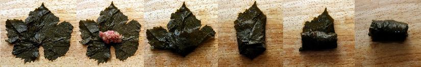

Ingredients
Description
Boil vine leaves in water to rid excess salt and soften them up a little. The trick of this recipe is being able to match the softness of the leaves to the rice, because raw meat and rice mixture will cook together with the vine leaves and in the end both should be al dente, that is, both should resist to the tooth but not be hard or uncooked. Once you drop the leaves into boiling water, check at 5 minute intervals, they should cook to a bit harder than al-dente, but never crunchy nor mushy. The rest is easy, yes, very easy.
Mix, meat, rice, black pepper, mint, paprika, 1 teaspoon of salt, 1 tablespoon of tomato paste, red pepper paste, onion and grated tomatoes into a doughy texture.
Roll small pieces (around 1 teaspoon) of this stuffing into the vine leaves as describes in the picture below:
Place stuffed rolls into a wide shallow non-stick or steel pot. If you use a steel pot, layer its bottom with spare leaves. You should place the rolls next to each other, do not squeeze, but make sure there is no space between them. Make no more than 3 layers.
In a separate bowl mix the remaining tomato paste, salt and boiling water thoroughly. Pour this liquid mixture over stuffed vine leaves. With a teaspoon, take small pieces of butter and place them evenly onto the vine rolls.
Cover the pot and put on high heat for a few minutes until it boils, bring the heat to the lowest and continue cooking until it absorbs all the water and becomes oily and shiny. Taste one sarma to see if rice and leaves has cooked thoroughly. If still not cooked enough, add half a cup of boiling water and keep cooking till the stuffed rolls absorb that too. Remove from the heat when done, let rest for half an hour. Serve warm-hot with yogurt (this is a must).